소방설비기사(기계분야) (2020-06-06 기출문제)
1과목: 소방원론
1. 0℃, 1기압에서 44.8m3의 용적을 가진 이산화탄소를 액화하여 얻을 수 있는 액화탄산 가스의 무게는 약 몇 kg인가?
- 88
- 44
- 22
- 11
(정답률: 51%)
2. 제거소화의 예에 해당하지 않는 것은?
- 밀폐 공간에서의 화재 시 공기를 제거한다.
- 가연성가스 화재 시 가스의 밸브를 닫는다.
- 산림화재 시 확산을 막기 위하여 산림의 일부를 벌목한다.
- 유류탱크 화재 시 연소되지 않은 기름을 다른 탱크로 이동시킨다.
(정답률: 72%)

3. 다음 중 소화에 필요한 이산화탄소 소화약제의 최소설계농도 값이 가장 높은 물질은?
- 메 탄
- 에틸렌
- 천연가스
- 아세틸렌
(정답률: 58%)
4. 인화알루미늄의 화재 시 주수소화하면 발생하는 물질은?
- 수 소
- 메 탄
- 포스핀
- 아세틸렌
(정답률: 57%)
5. 다음 물질의 저장창고에서 화재가 발생하였을 때 주수 소화를 할 수 없는 물질은?
- 부틸리튬
- 질산에틸
- 나이트로셀룰로스
- 적 린
(정답률: 59%)
6. 이산화탄소에 대한 설명으로 틀린 것은?
- 임계온도는 97.5℃이다.
- 고체의 형태로 존재할 수 있다.
- 불연성가스로 공기보다 무겁다.
- 드라이아이스와 분자식이 동일하다.
(정답률: 72%)
7. 실내 화재 시 발생한 연기로 인한 감광계수(m-1)와 가시거리에 대한 설명 중 틀린 것은?
- 감광계수가 0.1일 때 가시거리는 20~30m이다.
- 감광계수가 0.3일 때 가시거리는 15~20m이다.
- 감광계수가 1.0일 때 가시거리는 1~2m이다.
- 감광계수가 10일 때 가시거리는 0.2~0.5m이다.
(정답률: 63%)
8. 물질의 화재 위험성에 대한 설명으로 틀린 것은?
- 인화점 및 착화점이 낮을수록 위험
- 착화에너지가 작을수록 위험
- 비점 및 융점이 높을수록 위험
- 연소범위가 넓을수록 위험
(정답률: 68%)
9. 이산화탄소의 증기비중은 약 얼마인가? (단, 공기의 분자량은 29이다)
- 0.81
- 1.52
- 2.02
- 2.51
(정답률: 74%)
10. 위험물안전관리법령상 제2석유류에 해당하는 것으로만 나열된 것은?
- 아세톤, 벤젠
- 중유, 아닐린
- 에테르, 이황화탄소
- 아세트산, 아크릴산
(정답률: 45%)
11. 다음 중 연소범위를 근거로 계산한 위험도 값이 가장 큰 물질은?
- 이황화탄소
- 메 탄
- 수 소
- 일산화탄소
(정답률: 56%)
12. 가연물이 연소가 잘 되기 위한 구비조건으로 틀린 것은?
- 열전도율이 클 것
- 산소와 화학적으로 친화력이 클 것
- 표면적이 클 것
- 활성화 에너지가 작을 것
(정답률: 67%)
13. 유류탱크 화재 시 기름 표면에 물을 살수하면 기름이 탱크 밖으로 비산하여 화재가 확대되는 현상은?
- 슬롭 오버(Slop Over)
- 플래시 오버(Flash Over)
- 프로스 오버(Froth Over)
- 블레비(BLEVE)
(정답률: 65%)
14. 화재 시 나타나는 인간의 피난특성으로 볼 수 없는 것은?
- 어두운 곳으로 대피한다.
- 최초로 행동한 사람을 따른다.
- 발화지점의 반대방향으로 이동한다.
- 평소에 사용하던 문, 통로를 사용한다.
(정답률: 78%)
15. 종이, 나무, 섬유류 등에 의한 화재에 해당하는 것은?
- A급 화재
- B급 화재
- C급 화재
- D급 화재
(정답률: 78%)
16. NH4H2PO4를 주성분으로 한 분말소화약제는 제 몇 종 분말소화약제인가?
- 제1종
- 제2종
- 제3종
- 제4종
(정답률: 75%)
17. 다음 물질 중 연소하였을 때 시안화수소를 가장 많이 발생시키는 물질은?
- Polyethylene
- Polyurethane
- Polyvinyl Chloride
- Polystyrene
(정답률: 51%)
18. 산소의 농도를 낮추어 소화하는 방법은?
- 냉각소화
- 질식소화
- 제거소화
- 억제소화
(정답률: 74%)
19. 다음 중 상온 상압에서 액체인 것은?
- 탄산가스
- 할론 1301
- 할론 2402
- 할론 1211
(정답률: 61%)
20. 밀폐된 내화건물의 실내에 화재가 발생했을 때 그 실내의 환경변화에 대한 설명 중 틀린 것은?
- 기압이 급강하한다.
- 산소가 감소한다.
- 일산화탄소가 증가한다.
- 이산화탄소가 증가한다.
(정답률: 71%)
2과목: 소방유체역학
21. 비중이 0.8인 액체가 한 변이 10cm인 정육면체 모양 그릇의 반을 채울 때 액체의 질량(kg)은?
- 0.4
- 0.8
- 400
- 800
(정답률: 38%)
22. 펌프의 입구에서 진공계의 계기압력은 –160mmHg, 출구에서 압력계의 계기압력은 300kPa, 송출 유량은 10m3/min일 때 펌프의 수동력(kW)은? (단, 진공계와 압력계 사이의 수직거리는 2m이고, 흡입관과 송출관의 직경은 같으며, 손실은 무시한다)
- 5.7
- 56.8
- 557
- 3,400
(정답률: 50%)
23. 다음 (ㄱ), (ㄴ)에 알맞은 것은?
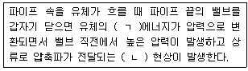
- (ㄱ) 운동, (ㄴ) 서징
- (ㄱ) 운동, (ㄴ) 수격작용
- (ㄱ) 위치, (ㄴ) 서징
- (ㄱ) 위치, (ㄴ) 수격작용
(정답률: 67%)
24. 과열증기의 대한 설명으로 틀린 것은?
- 과열증기의 압력은 해당온도에서의 포화압력보다 높다.
- 과열증기의 온도는 해당압력에서의 포화온도보다 높다.
- 과열증기의 비체적은 해당온도에서의 포화증기의 비체적보다 크다.
- 과열증기의 엔탈피는 해당압력에서의 포화증기의 엔탈피보다 크다.
(정답률: 30%)
25. 비중이 0.85이고 동점성계수가 3×10-4m2/s인 기름이 직경 10cm의 수평 원형 관 내에 20L/s으로 흐른다. 이 원형 관의 100m 길이에서의 수두손실(m)은? (단, 정상 비압축성 유동이다)
- 16.6
- 25.0
- 49.8
- 82.2
(정답률: 39%)
26. 그림과 같이 수족관에 직경 3m의 투시경이 설치되어있다. 이 투시경에 작용하는 힘(kN)은?
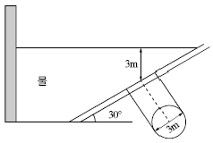
- 207.8
- 123.9
- 87.1
- 52.4
(정답률: 42%)
27. 점성에 관한 설명으로 틀린 것은?
- 액체의 점성은 분자 간 결합력에 관계된다.
- 기체의 점성은 분자 간 운동량 교환에 관계된다.
- 온도가 증가하면 기체의 점성은 감소된다.
- 온도가 증가하면 액체의 점성은 감소된다.
(정답률: 54%)
28. 240mmHg의 절대압력은 계기압력으로 약 몇 kPa인가? (단, 대기압은 760mmHg이고, 수은의 비중은 13.6이다)
- -32.0
- 32.0
- -69.3
- 69.3
(정답률: 48%)
29. 관의 길이가 l이고, 지름이 d, 관마찰계수가 f일 때, 총 손실수두 H(m)를 식으로 바르게 나타낸 것은? (단, 입구 손실계수가 0.5, 출구 손실계수가 1.0, 속도수두는 V2/2g이다.)
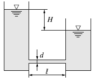
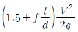
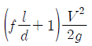
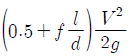
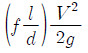
(정답률: 54%)
30. 회전속도 N(rpm)일 때 송출량 Q(m3/min), 전양정 H(m)인 원심펌프를 상사한 조건에서 회전속도를 1.4N(rpm)으로 바꾸어 작동할 때 (ㄱ)유량과 (ㄴ)전양정은?
- (ㄱ) 1.4Q , (ㄴ) 1.4H
- (ㄱ) 1.4Q, (ㄴ) 1.96H
- (ㄱ) 1.96Q , (ㄴ) 1.4H
- (ㄱ) 1.96Q, (ㄴ) 1.96H
(정답률: 58%)
31. 그림과 같이 길이 5m, 입구직경 (D1) 30cm, 출구직경 (D2) 16cm인 직관을 수평면과 30° 기울어지게 설치하였다. 입구에서 0.3m3/s로 유입되어 출구에서 대기중으로 분출된다면 입구에서의 압력(kPa)은? (단, 대기는 표준대기압 상태이고 마찰손실은 없다)
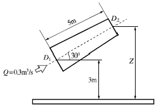
- 24.5
- 102
- 127
- 228
(정답률: 24%)
32. 다음 중 배관의 유량을 측정하는 계측 장치가 아닌 것은?
- 로터미터(Rotameter)
- 유동노즐(Flow Nozzel)
- 마노미터(Manometer)
- 오리피스(Orifice)
(정답률: 50%)
33. 지름 10cm의 호스에 출구 지름이 3cm인 노즐이 부착되어 있고, 1,500L/min의 물이 대기 중으로 뿜어져 나온다. 이때 4개의 플랜지 볼트를 사용하여 노즐을 호스에 부착하고 있다면 볼트 1개에 작용되는 힘의 크기(N)는? (단, 유동에서 마찰이 존재하지 않는다고 가정한다)
- 58.3
- 899.4
- 1,018.4
- 4,098.2
(정답률: 38%)
34. -10℃, 6기압의 이산화탄소 10kg이 분사노즐에서 1기압까지 가역 단열팽창 하였다면 팽창 후의 온도는 몇 ℃가 되겠는가? (단, 이산화탄소의 비열비는 1.289이다)
- -85
- -97
- -1⑤
- -115
(정답률: 42%)
35. 다음 그림에서 A, B점의 압력차(kPa)는? (단, A는 비중 1의 물, B는 비중 0.899의 벤젠이다)
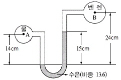
- 278.7
- 191.4
- 23.07
- 19.4
(정답률: 42%)
36. 펌프의 일과 손실을 고려할 때 베르누이 수정 방정식을 바르게 나타낸 것은? (단, HP와 HL은 펌프의 수두와 손실 수두를 나타내며, 하첨자 1, 2는 각각 펌프의 전후 위치를 나타낸다)
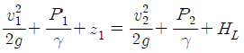
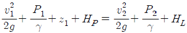
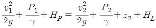
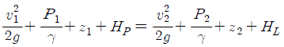
(정답률: 57%)
37. 그림과 같이 단면 A에서 정압이 500kPa이고 10m/s로 난류의 물이 흐르고 있을 때 단면 B에서의 유속(m/s)은?
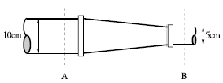
- 20
- 40
- 60
- 80
(정답률: 52%)
38. 압력이 100kPa이고 온도가 20℃인 이산화탄소를 완전기체라고 가정할 때 밀도(kg/m3)는? (단, 이산화탄소의 기체상수는 188.95J/kgㆍK이다)
- 1.1
- 1.8
- 2.56
- 3.8
(정답률: 49%)
39. 온도차이가 △T, 열전도율이 k1, 두께 x인 벽을 통한 열유속(Heat Flux)과 온도차이가 2△T, 열전도율이 k2, 두께 0.5x인 벽을 통한 열유속이 서로 같다면 두 재질의 열전도율비 k1/k2의 값은?
- 1
- 2
- 4
- 8
(정답률: 46%)
40. 표준대기압 상태인 어떤 지방의 호수 밑 72.4m에 있던 공기의 기포가 수면으로 올라오면 기포의 부피는 최초 부피의 몇 배가 되는가? (단, 기포 내의 공기는 보일의 법칙을 따른다)
- 2
- 4
- 7
- 8
(정답률: 33%)
3과목: 소방관계법규
41. 소방시설공사업법령상 소방공사감리를 실시함에 있어 용도와 구조에서 특별히 안전성과 보안성이 요구되는 소방대상물로서 소방시설물에 대한 감리를 감리업자가 아닌 자가 감리할 수 있는 장소는?
- 정보기관의 청사
- 교도소 등 교정관련시설
- 국방 관계시설 설치장소
- 원자력안전법상 관계시설이 설치되는 장소
(정답률: 58%)
42. 소방시설공사업법령에 따른 소방시설업 등록이 가능한 사람은?
- 피성년후견인
- 위험물안전관리법에 따른 금고 이상의 형의 집행 유예를 선고받고 그 유예기간 중에 있는 사람
- 등록하려는 소방시설업 등록이 취소된 날부터 3년이 지난 사람
- 소방기본법에 따른 금고 이상의 실형을 선고받고 그 집행이 면제된 날부터 1년이 지난 사람
(정답률: 67%)
43. 소방기본법령상 소방업무 상호응원협정 체결 시 포함되어야 하는 사항이 아닌 것은?
- 응원출동의 요청방법
- 응원출동훈련 및 평가
- 응원출동대상지역 및 규모
- 응원출동 시 현장지휘에 관한 사항
(정답률: 39%)
44. 소방기본법령에 따른 소방용수시설 급수탑 개폐밸브의 설치기준으로 맞는 것은?
- 지상에서 1.0m 이상 1.5m 이하
- 지상에서 1.2m 이상 1.8m 이하
- 지상에서 1.5m 이상 1.7m 이하
- 지상에서 1.5m 이상 2.0m 이하
(정답률: 56%)
45. 소방기본법에 따라 화재 등 그 밖의 위급한 상황이 발생한 현장에서 소방활동을 위하여 필요한 때에는 그 관할구역에 사는 사람 또는 그 현장에 있는 사람으로 하여금 사람을 구출하는 일 또는 불을 끄는 등의 일을 하도록 명령할 수 있는 권한이 없는 사람은?
- 소방서장
- 소방대장
- 시ㆍ도지사
- 소방본부장
(정답률: 61%)
46. 화재예방, 소방시설 설치ㆍ유지 및 안전관리에 관한 법률상 소방용품의 형식승인을 받지 아니하고 소방용품을 제조하거나 수입한 자에 대한 벌칙 기준은?
- 100만원 이하의 벌금
- 300만원 이하의 벌금
- 1년 이하의 징역 또는 1천만원 이하의 벌금
- 3년 이하의 징역 또는 3천만원 이하의 벌금
(정답률: 48%)
47. 위험물안전관리법령에 따라 위험물안전관리자를 해임하거나 퇴직한 때에는 해임하거나 퇴직한 날부터 며칠 이내에 다시 안전관리자를 선임하여야 하는가?
- 30일
- 35일
- 40일
- 55일
(정답률: 71%)
48. 화재예방, 소방시설 설치ㆍ유지 및 안전관리에 관한 법률상 화재위험도가 낮은 특정소방대상물 중 소방대가 조직되어 24시간 근무하고 있는 청사 및 차고에 설치하지 아니할 수 있는 소방시설이 아닌 것은?
- 피난기구
- 비상방송설비
- 연결송수관설비
- 자동화재탐지설비
(정답률: 54%)
49. 소방기본법령상 불꽃을 사용하는 용접ㆍ용단 기구의 용접 또는 용단 작업장에서 지켜야 하는 사항 중 다음 ( ) 안에 알맞은 것은?
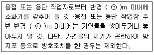
- ㉠ 3, ㉡ 5
- ㉠ 5, ㉡ 3
- ㉠ 5, ㉡ 10
- ㉠ 10, ㉡ 5
(정답률: 60%)
50. 다음 소방시설 중 경보설비가 아닌 것은?
- 통합감시시설
- 가스누설경보기
- 비상콘센트설비
- 자동화재속보설비
(정답률: 64%)
51. 화재예방, 소방시설 설치ㆍ유지 및 안전관리에 관한 법률상 소방안전관리대상물의 소방안전관리자의 업무가 아닌 것은?
- 소방시설 공사
- 소방훈련 및 교육
- 소방계획서의 작성 및 시행
- 자위소방대의 구성ㆍ운영ㆍ교육
(정답률: 63%)
52. 소방기본법령에 따라 주거지역ㆍ상업지역 및 공업지역에 소방용수시설을 설치하는 경우 소방대상물과의 수평거리를 몇 m 이하가 되도록 해야 하는가?
- 50
- 100
- 150
- 200
(정답률: 56%)
53. 위험물안전관리법령상 다음의 규정을 위반하여 위험물의 운송에 관한 기준을 따르지 아니한 자에 대한 과태료 기준은?(2020년 10월 20일 개정된 규정 적용됨)
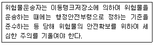
- 100만원 이하
- 200만원 이하
- 500만원 이하
- 1000만원 이하
(정답률: 32%)
54. 화재예방, 소방시설 설치ㆍ유치 및 안전관리에 관한 법률상 소방시설 등에 대한 자체점검 중 종합정밀점검 대상인 것은?
- 제연설비가 설치되지 않은 터널
- 스프링클러설비가 설치된 연면적이 5,000m2이고 12층인 아파트
- 물분무등소화설비가 설치된 연면적이 5,000m2인 위험물 제조소
- 호스릴 방식의 물분무등소화설비만을 설치한 연면적 3,000m2인 특정소방대상물
(정답률: 36%)
55. 화재예방, 소방시설 설치ㆍ유지 및 안전관리에 관한 법률상 건축허가 등의 동의대상물이 아닌 것은?
- 항공기 격납고
- 연면적이 300m2인 공연장
- 바닥면적이 300m2인 차고
- 연면적이 300m2인 노유자 시설
(정답률: 32%)
56. 위험물안전관리법령상 제조소등의 경보설비 설치기준에 대한 설명으로 틀린 것은?
- 제조소 및 일반취급소의 연면적이 500m2 이상인것에는 자동화재탐지설비를 설치한다.
- 자동신호장치를 갖춘 스프링클러설비 또는 물분무등소화설비를 설치한 제조소등에 있어서는 자동화재탐지설비를 설치한 것으로 본다.
- 경보설비는 자동화재탐지설비ㆍ비상경보설비(비상벨장치 또는 경종 포함)ㆍ확성장치(휴대용확성기 포함) 및 비상방송설비로 구분한다.
- 지정수량의 10배 이상의 위험물을 저장 또는 취급하는 제조소등(이동탱크저장소를 포함한다)에는 화재발생 시 이를 알릴 수 있는 경보설비를 설치하여야 한다.
(정답률: 33%)
57. 소방기본법령상 정당한 사유 없이 화재의 예방조치에 관한 명령에 따르지 아니한 경우에 대한 벌칙은?
- 100만원 이하의 벌금
- 200만원 이하의 벌금
- 300만원 이하의 벌금
- 500만원 이하의 벌금
(정답률: 35%)
58. 화재예방, 소방시설 설치ㆍ유지 및 안전관리에 관한 법률상 방염성능기준 이상의 실내장식물 등을 설치해야 하는 특정소방대상물이 아닌 것은?
- 숙박이 가능한 수련시설
- 층수가 11층 이상인 아파트
- 건축물 옥내에 있는 종교시설
- 방송통신시설 중 방송국 및 촬영소
(정답률: 62%)
59. 소방시설공사업법령에 따른 소방시설업의 등록권자는?
- 국무총리
- 소방서장
- 시ㆍ도지사
- 한국소방안전협회장
(정답률: 63%)
60. 위험물안전관리법령상 정기검사를 받아야 하는 특정ㆍ준특정옥외탱크저장소의 관계인은 특정ㆍ준특정옥외탱크저장소의 설치허가에 따른 완공검사필증을 발급받은 날부터 몇 년 이내에 정기검사를 받아야 하는가?
- 9
- 10
- 11
- 12
(정답률: 39%)
4과목: 소방기계시설의 구조 및 원리
61. 분말소화설비의 화재안전기준상 차고 또는 주차장에 설치하는 분말소화설비의 소화약제는?
- 인산염을 주성분으로 한 분말
- 탄산수소칼륨을 주성분으로 한 분말
- 탄산수소칼륨과 요소가 화합된 분말
- 탄산수소나트륨을 주성분으로 한 분말
(정답률: 67%)
62. 할론소화설비의 화재안전기준상 축압식 할론소화약제 저장용기에 사용되는 축압용가스로서 적합한 것은?
- 질 소
- 산 소
- 이산화탄소
- 불활성 가스
(정답률: 58%)
63. 물분무소화설비의 화재안전기준에 따른 물분무소화설비의 설치 장소별 1m2당 수원의 최소 저수량으로 맞는 것은?
- 차고 : 30L/min×20분×바닥면적
- 케이블트레이 : 12L/min×20분×투영된 바닥면적
- 컨베이어 벨트 : 37L/min×20분×벨트부분의 바닥면적
- 특수가연물을 취급하는 특정소방대상물 : 20L/min×20분×바닥면적
(정답률: 63%)
64. 화재예방, 소방시설 설치ㆍ유지 및 안전관리에 관한 법률상 자동소화장치를 모두 고른 것은?
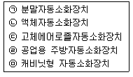
- ㉠, ㉡
- ㉡, ㉢, ㉣
- ㉠, ㉢ ,㉤
- ㉠, ㉡, ㉢, ㉣, ㉤
(정답률: 52%)
65. 피난기구를 설치하여야 할 소방대상물 중 피난기구의 2분의 1을 감소할 수 있는 조건이 아닌 것은?
- 주요구조부가 내화구조로 되어 있다.
- 특별피난계단이 2 이상 설치되어 있다.
- 소방구조용(비상용) 엘리베이터가 설치되어 있다.
- 직통계단인 피난계단이 2 이상 설치되어 있다.
(정답률: 64%)
66. 소화수조 및 저수조의 화재안전기준에 따라 소화용수설비에 설치하는 채수구의 수는 소요수량이 40m3 이상 100m3 미만인 경우 몇 개를 설치해야 하는가?
- 1
- 2
- 3
- 4
(정답률: 62%)
67. 포소화설비의 화재안전기준에 따라 바닥면적이 180m2인 건축물 내부에 호스릴 방식의 포소화설비를 설치할 경우 가능한 포소화약제의 최소 필요량은 몇 L인가? (단, 호스 접결구 : 2개, 약제 농도 : 3%)
- 180
- 270
- 650
- 720
(정답률: 43%)
68. 소화수조 및 저수조의 화재안전기준에 따라 소화용수 설비를 설치하여야 할 특정소방대상물에 있어서 유수의 양이 최소 몇 m3/min 이상인 유수를 사용할 수 있는 경우에 소화수조를 설치하지 아니할 수 있는가?
- 0.8
- 1
- 1.5
- 2
(정답률: 49%)
69. 스프링클러설비의 화재안전기준에 따라 개방형스프링클러설비에서 하나의 방수구역을 담당하는 헤드 개수는 최대 몇 개 이하로 설치하여야 하는가?
- 30
- 40
- 50
- 60
(정답률: 61%)
70. 완강기의 형식승인 및 제품검사의 기술기준상 완강기의 최대사용하중은 최소 몇 N 이상의 하중이어야 하는가?
- 800
- 1,000
- 1,200
- 1,500
(정답률: 68%)
71. 옥외소화전설비의 화재안전기준에 따라 옥외소화전 배관은 특정소방대상물의 각 부분으로부터 하나의 호스접결구까지의 수평거리가 최대 몇 m 이하가 되도록 설치하여야 하는가?
- 25
- 35
- 40
- 50
(정답률: 51%)
72. 난방설비가 없는 교육장소에 비치하는 소화기로 가장 적합한 것은? (단, 교육장소의 겨울 최저온도는 –15℃ 이다)
- 화학포소화기
- 기계포소화기
- 산알칼리 소화기
- ABC 분말소화기
(정답률: 68%)
73. 스프링클러설비의 화재안전기준에 따라 연소할 우려가 있는 개구부에 드렌처설비를 설치한 경우 해당 개구부에 한하여 스프링클러헤드를 설치하지 아니할 수 있다. 관련 기준으로 틀린 것은?
- 드렌처헤드는 개구부 위 측에 2.5m 이내마다 1개를 설치할 것
- 제어밸브는 특정소방대상물 층마다에 바닥면으로부터 0.5m 이상 1.5m 이하의 위치에 설치할 것
- 드렌처헤드가 가장 많이 설치된 제어밸브에 설치된 드렌처헤드를 동시에 사용하는 경우에 각 헤드 선단의 방수압력은 0.1MPa 이상이 되도록 할 것
- 드렌처헤드가 가장 많이 설치된 제어밸브에 설치된 드렌처헤드를 동시에 사용하는 경우에 각 헤드선단의 방수량은 80L/min 이상이 되도록 할 것
(정답률: 51%)
74. 연결살수설비의 화재안전기준에 따른 건축물에 설치하는 연결살수설비의 헤드에 대한 기준 중 다음 ( ) 안에 알맞은 것은?
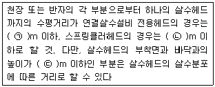
- ㉠ 3.7, ㉡ 2.3, ㉢ 2.1
- ㉠ 3.7, ㉡ 2.3, ㉢ 2.3
- ㉠ 2.3, ㉡ 3.7, ㉢ 2.3
- ㉠ 2.3, ㉡ 3.7, ㉢ 2.1
(정답률: 64%)
75. 분말소화설비의 화재안전기준에 따라 분말소화약제의 가압용가스 용기에는 최대 몇 MPa 이하의 압력에서 조정이 가능한 압력조정기를 설치하여야 하는가?
- 1.5
- 2.0
- 2.5
- 3.0
(정답률: 52%)
76. 포소화설비의 화재안전기준상 차고ㆍ주차장에 설치하는 포소화전설비의 설치 기준 중 다음 ( ) 안에 알맞은 것은? (단, 1개 층의 바닥면적이 200m2 이하인 경우는 제외한다)
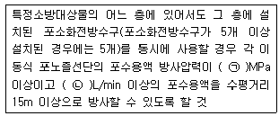
- ㉠ 0.25, ㉡ 230
- ㉠ 0.25, ㉡ 300
- ㉠ 0.35, ㉡ 230
- ㉠ 0.35, ㉡ 300
(정답률: 44%)
77. 이산화탄소소화설비의 화재안전기준에 따른 이산화탄소소화설비 기동장치의 설치기준으로 맞는 것은?
- 가스압력식 기동장치 기동용가스용기의 용적은 3L 이상으로 한다.
- 수동식 기동장치는 전역방출방식에 있어서 방호대상물마다 설치한다.
- 수동식 기동장치의 부근에는 소화약제의 방출을 지연시킬 수 있는 비상스위치를 설치해야 한다.
- 전기식 기동장치로서 5병의 저장용기를 동시에 개방하는 설비는 2병 이상의 저장용기에 전자개방밸브를 부착해야 한다.
(정답률: 54%)
78. 물분무소화설비의 화재안전기준에 따른 물분무소화설비의 저수량에 대한 기준 중 다음 ( ) 안의 내용으로 맞는 것은?
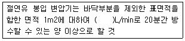
- 4
- 8
- 10
- 12
(정답률: 58%)
79. 화재조기진압용 스프링클러설비의 화재안전기준상 화재조기진압용 스프링클러설비 설치 장소의 구조 기준으로 틀린 것은?
- 창고 내의 선반의 형태는 하부로 물이 침투되는 구조로 할 것
- 천장의 기울기가 1,000분의 168을 초과하지 않아야 하고, 이를 초과하는 경우에는 반자를 지면과 수평으로 설치할 것
- 천장은 평평하여야 하며 철재나 목재트러스 구조인 경우, 철재나 목재의 돌출부분이 102mm를 초과하지 아니할 것
- 해당 층의 높이가 10m 이하일 것. 다만, 3층 이상일 경우에는 해당 층의 바닥을 내화구조로 하고 다른 부분과 방화구획 할 것
(정답률: 39%)
80. 제연설비의 화재안전기준상 유입풍도 및 배출풍도에 관한 설명으로 맞는 것은?
- 유입풍도 안의 풍속은 25m/s 이하로 한다.
- 배출풍도는 석면재료와 같은 내열성의 단열재로 유효한 단열 처리를 한다.
- 배출풍도와 유입풍도의 아연도금강판 최소 두께는 0.45mm 이상으로 하여야 한다.
- 배출기 흡입측 풍도 안의 풍속은 15m/s 이하로 하고 배출측 풍속은 20m/s 이하로 한다.
(정답률: 57%)